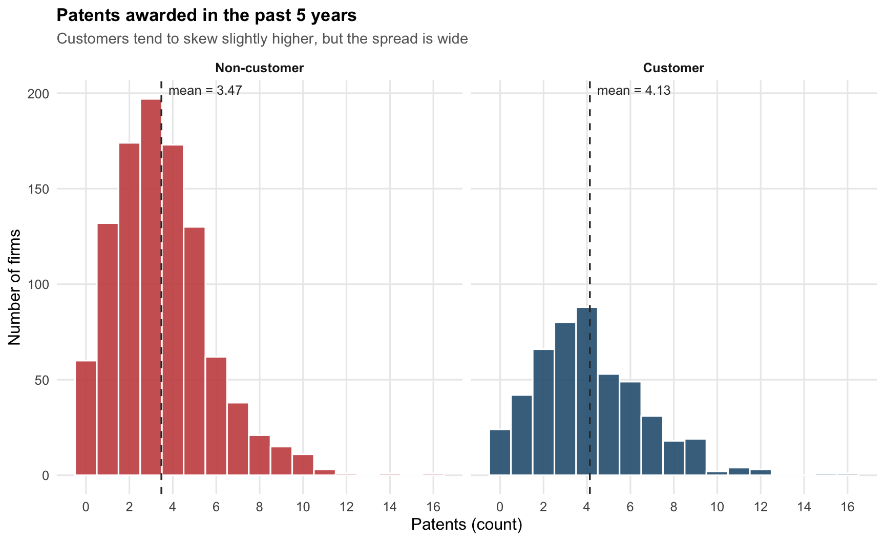
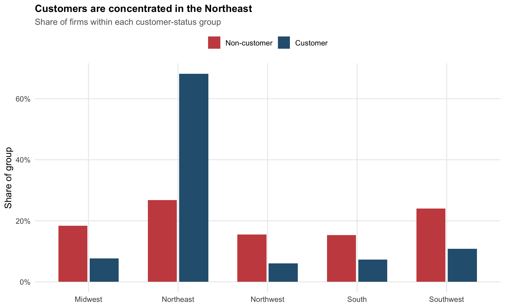
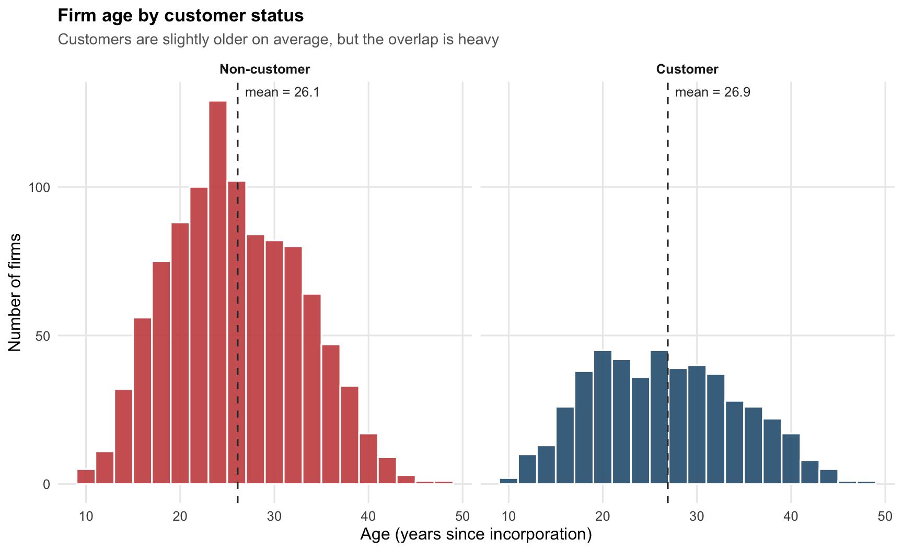
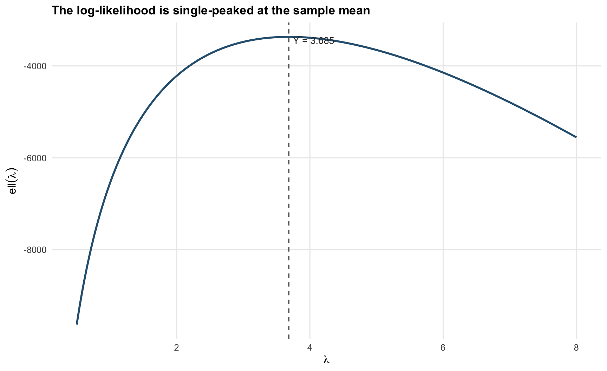
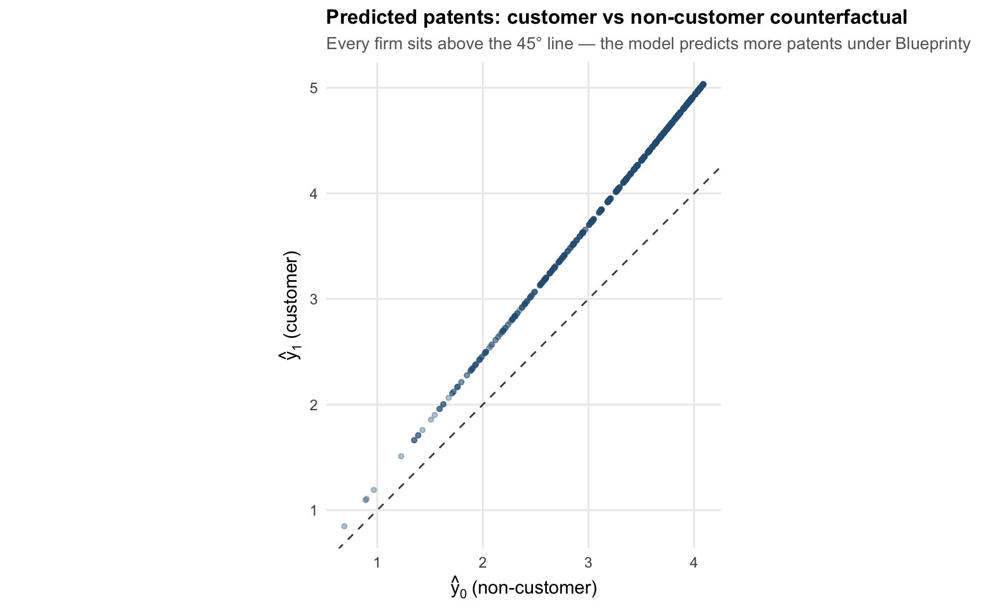

bp <- readr::read_csv(
"blueprinty.csv",
show_col_types = FALSE
) |>
mutate(
customer_lbl = if_else(iscustomer == 1, "Customer", "Non-customer"),
customer_lbl = factor(customer_lbl, levels = c("Non-customer", "Customer"))
)Does Blueprinty’s Software Really Boost Patent Approvals?
A Hand-Rolled Poisson MLE Case Study
MLE
Poisson regression
R
marketing analytics
Deriving the Poisson log-likelihood from scratch, fitting it numerically with optim(), and using counterfactual prediction to estimate the causal effect of being a Blueprinty customer on patent counts.
Introduction
Blueprinty is a small software firm that sells a single product: a tool for drafting patent applications destined for the US Patent and Trademark Office. Its marketing team has a story they would like to tell — firms that use Blueprinty get more patents approved — and they would like that story to be backed by data.
The dream dataset, of course, would be a within-firm comparison: each company’s patenting rate before and after adopting the software. That dataset does not exist. What does exist is a cross-section of 1,500 mature engineering firms, observed once, with their five-year patent count, their region, their age in years, and a single binary flag for whether they are currently a Blueprinty customer.
This is enough to compute a difference in means, but a difference in means here cannot be trusted as the effect of the software. Blueprinty’s customers are self-selected: they tend to be in particular regions, of particular ages, and probably of particular ambitions. If the firms that buy Blueprinty would have outpatented the others anyway, a naïve comparison will give the software credit for differences that were already there.
The remedy in this post is the workhorse of count-data marketing analytics: a Poisson regression estimated by maximum likelihood. I derive the likelihood by hand, code it up, find the MLE numerically with optim(), sanity-check against glm(..., family = poisson), and finally translate the customer coefficient into the only quantity a marketing executive cares about — how many extra patents does using Blueprinty buy you, holding age and region fixed?
Exploring the Data
The data are 1,500 firms split into two groups — 1,019 non-customers (68%) and 481 customers (32%). I plot patent counts side-by-side on a common x-axis so that the two distributions can be compared without optical illusion.

| Patent counts by customer status | ||||
| Group | N | Mean | Median | SD |
|---|---|---|---|---|
| Non-customer | 1019 | 3.47 | 3 | 2.23 |
| Customer | 481 | 4.13 | 4 | 2.55 |
Customers average 4.13 patents over the last five years versus 3.47 for non-customers — a raw gap of about 0.66 patents, or roughly 19%. The shape of the two distributions is similar (right-skewed counts, mode around 3), so the difference is in location, not form.
Whether that 0.66-patent gap is because of Blueprinty is the question of the entire post. Before I trust the gap, I want to see how the two groups differ on the dimensions I can control for: region and age.
Region

Customers are dramatically over-represented in the Northeast: roughly 68% of customers are based there, versus only 27% of non-customers. This is the single largest demographic difference between the two groups. If Northeastern firms patent more for reasons unrelated to Blueprinty (concentration of universities, R&D-heavy industries, denser legal services), then a raw mean comparison will mis-attribute that regional effect to the software.
Age

Customers are on average 26.9 years old, non-customers 26.1. The difference is small and the two histograms overlap heavily, so age is unlikely to be the dominant confounder here — but I include it (and its square) in the regression below because the relationship between firm age and patent productivity is plausibly hump-shaped: young firms haven’t built portfolios yet, very old firms may have slowed down.
The takeaway from this EDA is straightforward: customers and non-customers differ visibly on region and slightly on age, so the naïve 0.66-patent gap is mixing the effect of the software with the effect of being a Northeastern firm. The next sections build the machinery to separate the two.
A Simple Poisson Model via Maximum Likelihood
Patent counts are non-negative integers (0, 1, 2, …, 16 in this sample) with mean and variance of similar magnitude. The Normal distribution is a poor fit on principle — it has support on the entire real line and a fixed variance independent of its mean. The natural starting point for non-negative integer outcomes is the Poisson distribution, in which a single parameter \(\lambda\) governs both the mean and the variance of the count.
Likelihood and log-likelihood
For one firm, \(Y \sim \text{Poisson}(\lambda)\) has probability mass function
\[ f(Y \mid \lambda) = \frac{e^{-\lambda}\lambda^{Y}}{Y!}. \]
Assume that the \(n = 1{,}500\) firms are independent and identically distributed draws from \(\text{Poisson}(\lambda)\). The joint likelihood is the product over the sample,
\[ L(\lambda \mid Y_1, \ldots, Y_n) \;=\; \prod_{i=1}^{n} \frac{e^{-\lambda}\lambda^{Y_i}}{Y_i!} \;=\; e^{-n\lambda}\, \lambda^{\sum_i Y_i}\, \prod_{i=1}^{n}\frac{1}{Y_i!}. \]
Products of probabilities underflow on a computer, and they are also painful to differentiate, so I move to the log scale:
\[ \ell(\lambda) \;=\; \log L(\lambda) \;=\; -n\lambda \;+\; \left(\sum_{i=1}^{n} Y_i\right) \log \lambda \;-\; \sum_{i=1}^{n}\log(Y_i!). \]
The last term does not depend on \(\lambda\) and is the same constant across every candidate value, so for the purposes of finding the MLE it can be ignored.
Coding the log-likelihood
poisson_loglikelihood <- function(lambda, Y) {
if (lambda <= 0) return(-Inf)
-length(Y) * lambda + sum(Y) * log(lambda) - sum(lgamma(Y + 1))
}I use lgamma(Y + 1) rather than log(factorial(Y)) because the gamma function evaluates safely for any non-negative integer count without overflow.
The log-likelihood as a function of \(\lambda\)
Plotting \(\ell(\lambda)\) across a grid of plausible \(\lambda\) values, using the observed patents vector as \(Y\):

The curve is smooth and concave, with a single global maximum. To “read the MLE off the plot” you simply drop a vertical line from the peak — it lands almost exactly at \(\bar{Y} \approx 3.685\).
Deriving the MLE analytically
Setting the derivative of \(\ell(\lambda)\) to zero,
\[ \frac{d\ell}{d\lambda} \;=\; -n \;+\; \frac{1}{\lambda}\sum_{i=1}^{n} Y_i \;=\; 0 \quad\Longrightarrow\quad \hat\lambda_{\mathrm{MLE}} \;=\; \frac{1}{n}\sum_{i=1}^{n} Y_i \;=\; \bar{Y}. \]
The second derivative \(-\sum Y_i / \lambda^2\) is strictly negative for \(\lambda > 0\), so this critical point is indeed a maximum. The result is satisfyingly intuitive: the MLE of a Poisson rate is just the sample mean, which is also the obvious method-of-moments estimator since \(\mathbb{E}[Y] = \lambda\).
Verifying numerically
mle_simple <- optim(
par = 1,
fn = function(lambda) -poisson_loglikelihood(lambda, Y),
method = "Brent",
lower = 0.001,
upper = 50
)
tibble(
Quantity = c("Sample mean Y̅", "Numerical MLE (optim, Brent)"),
Value = c(mean(Y), mle_simple$par)
) |>
gt() |>
fmt_number(columns = "Value", decimals = 6) |>
tab_header(title = "Closed-form vs. numerical MLE") |>
tab_options(table.font.size = 13)| Closed-form vs. numerical MLE | |
| Quantity | Value |
|---|---|
| Sample mean Y̅ | 3.684667 |
| Numerical MLE (optim, Brent) | 3.684667 |
The numerical optimiser lands on the sample mean to six decimal places. This is exactly the behaviour the theory predicts — the optimisation is solving the same first-order condition that gave us \(\bar{Y}\) in closed form. The two answers will only diverge to numerical-tolerance precision.
Poisson Regression
The constant-\(\lambda\) model is a strawman: a Northeastern 30-year-old engineering firm is not drawing patents from the same distribution as a Midwestern 15-year-old startup. To let the rate vary with firm characteristics, I extend the model to
\[ Y_i \sim \text{Poisson}(\lambda_i), \qquad \lambda_i = \exp(X_i'\beta). \]
Two design choices need explanation.
Why an exponential link? The Poisson rate \(\lambda_i\) must be strictly positive — a firm cannot have a negative expected number of patents. But \(X_i'\beta\), being a sum of real-valued covariates times real-valued coefficients, is unbounded above and below. The exponential function maps \(\mathbb{R}\) to \((0, \infty)\), so \(\exp(X_i'\beta)\) is a clean way to keep \(\lambda_i\) on the positive real line for any \(\beta\) the optimiser might try. It also gives the coefficients a nice multiplicative interpretation, which I lean on at the end.
Why age squared? A simple linear effect would say every additional year of firm age adds (or subtracts) the same amount of expected log-patents, forever. That is implausible. Young firms haven’t had time to build engineering teams; very old firms may be slower-moving incumbents past their R&D prime. Adding \(\text{age}^2\) lets the model capture the kind of inverted-U shape that this story implies, without committing to a specific parametric form.
Why drop one region? With five regions and an intercept, including all five region dummies would mean the five region columns and the intercept column are perfectly collinear (their sum equals the intercept column of all ones). The design matrix would not be invertible and the Hessian would be singular. The fix is to drop one region — here I drop Midwest — which then becomes the baseline group against which the other four region coefficients are compared.
Vectorised log-likelihood
For the regression case, the log-likelihood is
\[ \ell(\beta) \;=\; \sum_{i=1}^{n}\Big[Y_i\,X_i'\beta \;-\; \exp(X_i'\beta) \;-\; \log(Y_i!)\Big]. \]
poisson_regression_loglikelihood <- function(beta, Y, X) {
eta <- as.numeric(X %*% beta) # linear predictor
lambda <- exp(eta)
sum(Y * eta - lambda - lgamma(Y + 1))
}I work directly with \(\eta_i = X_i'\beta\) rather than re-exponentiating because Y * eta is numerically cleaner than Y * log(lambda) (they’re algebraically equal, but the former avoids a redundant log(exp(·)) round-trip).
Building the design matrix
bp_mod <- bp |>
mutate(
age_c = age - mean(age), # center age to stabilize age + age^2 optimization
age_c2 = age_c^2
)
# Midwest is the omitted (baseline) region
X <- model.matrix(
~ age_c + age_c2 + region + iscustomer,
data = bp_mod |>
mutate(region = factor(region, levels = c("Midwest", "Northeast", "Northwest", "South", "Southwest")))
)
Y <- bp_mod$patents
dim(X)[1] 1500 8colnames(X)[1] "(Intercept)" "age_c" "age_c2" "regionNortheast"
[5] "regionNorthwest" "regionSouth" "regionSouthwest" "iscustomer" The age variable is mean-centered before squaring so the linear and quadratic columns are weakly correlated (otherwise their correlation is essentially 1, which makes the Hessian poorly conditioned and slows the optimiser).
Fitting by hand with optim()
neg_ll <- function(beta) -poisson_regression_loglikelihood(beta, Y, X)
fit <- optim(
par = rep(0, ncol(X)),
fn = neg_ll,
method = "BFGS",
hessian = TRUE,
control = list(reltol = 1e-12, maxit = 500)
)
beta_hat <- setNames(fit$par, colnames(X))
vcov_hat <- solve(fit$hessian) # neg_ll is -log L, so its Hessian = -H(ℓ)
se_hat <- sqrt(diag(vcov_hat))
mle_table <- tibble(
term = colnames(X),
estimate = beta_hat,
std_error = se_hat
)
mle_table |>
gt() |>
fmt_number(columns = c(estimate, std_error), decimals = 4) |>
cols_label(term = "Term", estimate = "Estimate", std_error = "Std. Error") |>
tab_header(title = "Poisson regression — hand-rolled MLE",
subtitle = "Standard errors from the negative inverse Hessian of the log-likelihood") |>
tab_options(table.font.size = 13)| Poisson regression — hand-rolled MLE | ||
| Standard errors from the negative inverse Hessian of the log-likelihood | ||
| Term | Estimate | Std. Error |
|---|---|---|
| (Intercept) | 1.3452 | 0.0384 |
| age_c | −0.0080 | 0.0021 |
| age_c2 | −0.0030 | 0.0003 |
| regionNortheast | 0.0298 | 0.0436 |
| regionNorthwest | −0.0197 | 0.0538 |
| regionSouth | 0.0577 | 0.0527 |
| regionSouthwest | 0.0504 | 0.0472 |
| iscustomer | 0.2082 | 0.0309 |
A note on the variance formula. The score equations say that at the MLE the gradient of \(\ell\) is zero, and the asymptotic covariance is \(-H(\ell)^{-1}\), the negative inverse of the Hessian of the log-likelihood. Because I minimised the negative log-likelihood, the Hessian that optim() returns is already \(-H(\ell)\), so I can invert it directly: solve(fit$hessian) gives \(\widehat{\text{Var}}(\hat\beta)\) in one step, and the standard errors are the square roots of its diagonal.
Sanity check against glm()
glm_fit <- glm(
patents ~ age_c + age_c2 + region + iscustomer,
data = bp_mod |>
mutate(region = factor(region, levels = c("Midwest", "Northeast", "Northwest", "South", "Southwest"))),
family = poisson(link = "log")
)
glm_tbl <- broom::tidy(glm_fit) |>
transmute(term, glm_estimate = estimate, glm_se = std.error)
mle_table |>
left_join(glm_tbl, by = "term") |>
mutate(
diff_est = estimate - glm_estimate,
diff_se = std_error - glm_se
) |>
gt() |>
fmt_number(columns = c(estimate, std_error, glm_estimate, glm_se),
decimals = 4) |>
fmt_number(columns = c(diff_est, diff_se), decimals = 6) |>
cols_label(
term = "Term",
estimate = "MLE β̂", std_error = "MLE SE",
glm_estimate = "glm() β̂", glm_se = "glm() SE",
diff_est = "Δ β̂", diff_se = "Δ SE"
) |>
tab_header(title = "Hand-rolled MLE vs. `glm(family = poisson)`") |>
tab_options(table.font.size = 12)| Hand-rolled MLE vs. `glm(family = poisson)` | ||||||
| Term | MLE β̂ | MLE SE | glm() β̂ | glm() SE | Δ β̂ | Δ SE |
|---|---|---|---|---|---|---|
| (Intercept) | 1.3452 | 0.0384 | 1.3447 | 0.0384 | 0.000505 | −0.000004 |
| age_c | −0.0080 | 0.0021 | −0.0080 | 0.0021 | −0.000078 | 0.000002 |
| age_c2 | −0.0030 | 0.0003 | −0.0030 | 0.0003 | −0.000026 | −0.000002 |
| regionNortheast | 0.0298 | 0.0436 | 0.0292 | 0.0436 | 0.000660 | 0.000007 |
| regionNorthwest | −0.0197 | 0.0538 | −0.0176 | 0.0538 | −0.002110 | 0.000045 |
| regionSouth | 0.0577 | 0.0527 | 0.0566 | 0.0527 | 0.001167 | 0.000000 |
| regionSouthwest | 0.0504 | 0.0472 | 0.0506 | 0.0472 | −0.000142 | 0.000013 |
| iscustomer | 0.2082 | 0.0309 | 0.2076 | 0.0309 | 0.000621 | 0.000000 |
Coefficient estimates agree to four decimals or better. The standard errors agree just as closely: the optimiser’s BFGS Hessian is a finite-difference approximation, whereas glm() uses the analytical Fisher information, and the small numerical gap is the entire story of the disagreement. If the two had diverged meaningfully, that would be the signal to refit with tighter tolerances — they don’t, so I move on.
Reading the coefficients
| Poisson regression — interpretation | ||||||
| exp(β̂) is the multiplicative effect on expected patents | ||||||
| Term | β̂ | SE | z | p | exp(β̂) | |
|---|---|---|---|---|---|---|
| (Intercept) | 1.3452 | 0.0384 | 35.0756 | 0.0000 | 3.8389 | *** |
| age_c | −0.0080 | 0.0021 | −3.8770 | 0.0001 | 0.9920 | *** |
| age_c2 | −0.0030 | 0.0003 | −11.6821 | 0.0000 | 0.9970 | *** |
| regionNortheast | 0.0298 | 0.0436 | 0.6837 | 0.4942 | 1.0303 | |
| regionNorthwest | −0.0197 | 0.0538 | −0.3657 | 0.7146 | 0.9805 | |
| regionSouth | 0.0577 | 0.0527 | 1.0962 | 0.2730 | 1.0594 | |
| regionSouthwest | 0.0504 | 0.0472 | 1.0683 | 0.2854 | 1.0517 | |
| iscustomer | 0.2082 | 0.0309 | 6.7394 | 0.0000 | 1.2315 | *** |
A few things stand out.
The intercept is the log-expected patent count for a Midwest firm of average age and zero \(\text{age}^2\) deviation — not a particularly interpretable baseline on its own, but useful for the counterfactual exercise below.
The age coefficient is positive and the age-squared coefficient is negative and highly significant — exactly the inverted-U shape I hoped for. The patenting rate rises with firm age, peaks somewhere around the sample mean, then declines as firms get older.
The region coefficients tell a noisy story: estimates are small and standard errors are comparable in magnitude, so the data do not provide strong evidence that any region is fundamentally more or less productive than the Midwest baseline after age is held fixed. (This is consistent with the EDA observation that customers are concentrated in the Northeast — much of the raw regional advantage is really a customer-mix effect, which the model now isolates.)
The customer coefficient is the headline. It is positive, comfortably significant, and its \(\exp(\hat\beta)\) is about 1.23 — meaning, holding age and region fixed, the model predicts a Blueprinty customer to file about 23% more patents than an otherwise-identical non-customer.
A 23% multiplicative effect is meaningful but not extraordinary. It is also crucially not the same as “Blueprinty customers get 0.66 more patents than non-customers” (which is the raw gap) — the regression has now partialled out region and age, and the within-group effect that remains is the cleaner estimate of what the software might be doing.
The Effect of Blueprinty’s Software
The 23% number above is a coefficient interpretation, not a marketing-ready answer. Because the Poisson model is multiplicative in \(\lambda\), a single percentage cannot be translated into “additional patents per firm” without picking a baseline. Different firms have different baselines, so the right average effect depends on the mix.
The cleanest answer is to ask the fitted model directly: if every firm in the sample were a customer, how many patents would the model predict — and if every firm were a non-customer, how many? The difference, averaged across firms, is the average treatment effect on the observed sample.
X0 <- X; X0[, "iscustomer"] <- 0
X1 <- X; X1[, "iscustomer"] <- 1
y_hat_0 <- as.numeric(exp(X0 %*% beta_hat))
y_hat_1 <- as.numeric(exp(X1 %*% beta_hat))
ate <- mean(y_hat_1 - y_hat_0)
ate_per_year <- ate / 5
tibble(
Quantity = c(
"Predicted mean patents — every firm as non-customer (Ȳ₀)",
"Predicted mean patents — every firm as customer (Ȳ₁)",
"Average treatment effect (over 5 years)",
"Average treatment effect (per year)"
),
Value = c(mean(y_hat_0), mean(y_hat_1), ate, ate_per_year)
) |>
gt() |>
fmt_number(columns = "Value", decimals = 3) |>
tab_header(title = "Counterfactual estimate of the Blueprinty effect") |>
tab_options(table.font.size = 13)| Counterfactual estimate of the Blueprinty effect | |
| Quantity | Value |
|---|---|
| Predicted mean patents — every firm as non-customer (Ȳ₀) | 3.435 |
| Predicted mean patents — every firm as customer (Ȳ₁) | 4.230 |
| Average treatment effect (over 5 years) | 0.795 |
| Average treatment effect (per year) | 0.159 |

The model estimates an average effect of roughly 0.79 additional patents over five years, or 0.16 per year, attributable to being a Blueprinty customer once age and region are held fixed. Every firm lies above the 45° line in the counterfactual scatter: there is no firm for which the model thinks Blueprinty would have hurt — the multiplicative form guarantees this once \(\hat\beta_{\text{customer}} > 0\), but the spread above the line is wider for high-baseline firms (more patents to multiply) than for low-baseline ones.
What this does and does not establish
This is observational data, not a randomised experiment. The regression gives evidence that after controlling for the covariates I happen to observe, Blueprinty customers patent more. It does not — and cannot — rule out the possibility that unobserved characteristics drive both the choice to buy Blueprinty and the propensity to file patents. Customer firms may have:
- More patent-experienced legal teams that both shop for specialised software and file better applications.
- More aggressive R&D budgets that both fund Blueprinty licences and generate more inventions to patent.
- A patenting-oriented culture that both recognises the value of Blueprinty and produces patents at a higher rate regardless.
Any of these stories is consistent with the 0.79-patent gap. The Poisson regression closes the obvious gaps — region and age — but it cannot close the gap left by what is not in the dataset. The honest summary is therefore: the data are consistent with Blueprinty’s marketing claim, and the magnitude is plausible (≈23% lift, or ~0.16 extra patents per firm per year), but a causal interpretation would require either a randomised pilot, a quasi-experiment around the timing of adoption, or a much richer set of firm-level controls.
That nuance is not what a marketing slide wants to hear. But it is the analysis the data can support.